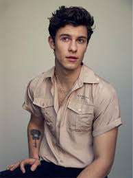

Cantores
Eu amo ouvir música e sou muito de fases, sou eclética e estou sempre gostando de músicas e artistas diferentes.
No momento, os artista que eu mais estou curtindo são:
AnaVitória: Amo as músicas delas, são super leves e acalmam qualquer um. Elas são, sem dúvidas, minha dupla de cantoras favoritas.

Shawn Mendes: Shawn é incrível, as músicas dele soam bem em qualquer ouvido, além de ter uma voz mais que perfeita. Sou super fã, e diria que ele é um dos melhores cantores dessa nova geração.